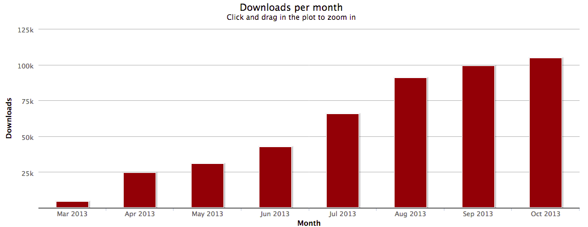

Your browser doesn't support the features required by impress.js, so you are presented with a simplified
version of this presentation.
For the best experience please use the latest Chrome, Safari or Firefox browser.
Grunt and Karma
Automation is King!
by George Maggessy
Grunt
- JavaScript Task Runner.
- Analogous to ANT.
|

|
- Powered by NodeJS. That is, it's just an npm module.
- Browser and platform agnostic, minify CSS, process SASS, optimize images, run tests...
- Who uses it?! Adobe, Twitter, Google, jQuery, and us!
Grunt Downloads
Getting Started
|
Download NodeJS from http://nodejs.org/
|
|
|
| |
|
Installing Grunt...
|
|
|
Grunt Files
package.json: Used by npm to store metadata for. You will list grunt and the Grunt plugins
as devDependencies in this file.
Gruntfile.js: This file is named Gruntfile.js and is used to configure or define tasks and
load Grunt plugins.
Grunt Demo
- JavaScript Test Runner.
- Powered by NodeJS. That is, it's just an npm module.
- Some JS frameworks do DOM manipulation and to test that you need real browsers.
- It's testing framework agnostic. You can use Mocha, Jasmine, QUnit or anything else.
- During development, you want to run your tests at every save.
Karma Downloads

Karma Files
- karma.conf.js - Karma configuration file.
- Can be created through the command 'karma init'.
... or copied from https://github.com/karma-runner/karma.
Karma Demo
Karma Debug
|
http://localhost:9876/debug.html
|